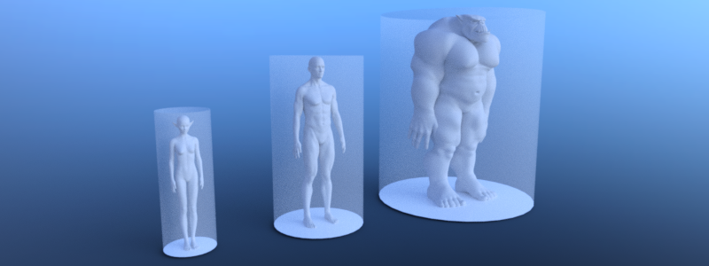

Support different actor types

To support different actor types due to e.g. their sizes each type requires its own navigation map and navigation mesh baked with an appropriated agent radius and height. The same approach can be used to distinguish between e.g. landwalking, swimming or flying agents.
Note
Agents are exclusively defined by a radius and height value for baking navigation meshes, pathfinding and avoidance. More complex shapes are not supported.
# Create a navigation mesh resource for each actor size.
var navigation_mesh_standard_size: NavigationMesh = NavigationMesh.new()
var navigation_mesh_small_size: NavigationMesh = NavigationMesh.new()
var navigation_mesh_huge_size: NavigationMesh = NavigationMesh.new()
# Set appropriated agent parameters.
navigation_mesh_standard_size.agent_radius = 0.5
navigation_mesh_standard_size.agent_height = 1.8
navigation_mesh_small_size.agent_radius = 0.25
navigation_mesh_small_size.agent_height = 0.7
navigation_mesh_huge_size.agent_radius = 1.5
navigation_mesh_huge_size.agent_height = 2.5
# Get the root node to parse geometry for the baking.
var root_node: Node3D = get_node("NavigationMeshBakingRootNode")
# Create the source geometry resource that will hold the parsed geometry data.
var source_geometry_data: NavigationMeshSourceGeometryData3D = NavigationMeshSourceGeometryData3D.new()
# Parse the source geometry from the scene tree on the main thread.
# The navigation mesh is only required for the parse settings so any of the three will do.
NavigationServer3D.parse_source_geometry_data(navigation_mesh_standard_size, source_geometry_data, root_node)
# Bake the navigation geometry for each agent size from the same source geometry.
# If required for performance this baking step could also be done on background threads.
NavigationServer3D.bake_from_source_geometry_data(navigation_mesh_standard_size, source_geometry_data)
NavigationServer3D.bake_from_source_geometry_data(navigation_mesh_small_size, source_geometry_data)
NavigationServer3D.bake_from_source_geometry_data(navigation_mesh_huge_size, source_geometry_data)
# Create different navigation maps on the NavigationServer.
var navigation_map_standard: RID = NavigationServer3D.map_create()
var navigation_map_small: RID = NavigationServer3D.map_create()
var navigation_map_huge: RID = NavigationServer3D.map_create()
# Set the new navigation maps as active.
NavigationServer3D.map_set_active(navigation_map_standard, true)
NavigationServer3D.map_set_active(navigation_map_small, true)
NavigationServer3D.map_set_active(navigation_map_huge, true)
# Create a region for each map.
var navigation_region_standard: RID = NavigationServer3D.region_create()
var navigation_region_small: RID = NavigationServer3D.region_create()
var navigation_region_huge: RID = NavigationServer3D.region_create()
# Add the regions to the maps.
NavigationServer3D.region_set_map(navigation_region_standard, navigation_map_standard)
NavigationServer3D.region_set_map(navigation_region_small, navigation_map_small)
NavigationServer3D.region_set_map(navigation_region_huge, navigation_map_huge)
# Set navigation mesh for each region.
NavigationServer3D.region_set_navigation_mesh(navigation_region_standard, navigation_mesh_standard_size)
NavigationServer3D.region_set_navigation_mesh(navigation_region_small, navigation_mesh_small_size)
NavigationServer3D.region_set_navigation_mesh(navigation_region_huge, navigation_mesh_huge_size)
# Create start and end position for the navigation path query.
var start_pos: Vector3 = Vector3(0.0, 0.0, 0.0)
var end_pos: Vector3 = Vector3(2.0, 0.0, 0.0)
var use_corridorfunnel: bool = true
# Query paths for each agent size.
var path_standard_agent = NavigationServer3D.map_get_path(navigation_map_standard, start_pos, end_pos, use_corridorfunnel)
var path_small_agent = NavigationServer3D.map_get_path(navigation_map_small, start_pos, end_pos, use_corridorfunnel)
var path_huge_agent = NavigationServer3D.map_get_path(navigation_map_huge, start_pos, end_pos, use_corridorfunnel)
// Create a navigation mesh resource for each actor size.
NavigationMesh navigationMeshStandardSize = new NavigationMesh();
NavigationMesh navigationMeshSmallSize = new NavigationMesh();
NavigationMesh navigationMeshHugeSize = new NavigationMesh();
// Set appropriated agent parameters.
navigationMeshStandardSize.AgentRadius = 0.5f;
navigationMeshStandardSize.AgentHeight = 1.8f;
navigationMeshSmallSize.AgentRadius = 0.25f;
navigationMeshSmallSize.AgentHeight = 0.7f;
navigationMeshHugeSize.AgentRadius = 1.5f;
navigationMeshHugeSize.AgentHeight = 2.5f;
// Get the root node to parse geometry for the baking.
Node3D rootNode = GetNode<Node3D>("NavigationMeshBakingRootNode");
// Create the source geometry resource that will hold the parsed geometry data.
NavigationMeshSourceGeometryData3D sourceGeometryData = new NavigationMeshSourceGeometryData3D();
// Parse the source geometry from the scene tree on the main thread.
// The navigation mesh is only required for the parse settings so any of the three will do.
NavigationServer3D.ParseSourceGeometryData(navigationMeshStandardSize, sourceGeometryData, rootNode);
// Bake the navigation geometry for each agent size from the same source geometry.
// If required for performance this baking step could also be done on background threads.
NavigationServer3D.BakeFromSourceGeometryData(navigationMeshStandardSize, sourceGeometryData);
NavigationServer3D.BakeFromSourceGeometryData(navigationMeshSmallSize, sourceGeometryData);
NavigationServer3D.BakeFromSourceGeometryData(navigationMeshHugeSize, sourceGeometryData);
// Create different navigation maps on the NavigationServer.
Rid navigationMapStandard = NavigationServer3D.MapCreate();
Rid navigationMapSmall = NavigationServer3D.MapCreate();
Rid navigationMapHuge = NavigationServer3D.MapCreate();
// Set the new navigation maps as active.
NavigationServer3D.MapSetActive(navigationMapStandard, true);
NavigationServer3D.MapSetActive(navigationMapSmall, true);
NavigationServer3D.MapSetActive(navigationMapHuge, true);
// Create a region for each map.
Rid navigationRegionStandard = NavigationServer3D.RegionCreate();
Rid navigationRegionSmall = NavigationServer3D.RegionCreate();
Rid navigationRegionHuge = NavigationServer3D.RegionCreate();
// Add the regions to the maps.
NavigationServer3D.RegionSetMap(navigationRegionStandard, navigationMapStandard);
NavigationServer3D.RegionSetMap(navigationRegionSmall, navigationMapSmall);
NavigationServer3D.RegionSetMap(navigationRegionHuge, navigationMapHuge);
// Set navigation mesh for each region.
NavigationServer3D.RegionSetNavigationMesh(navigationRegionStandard, navigationMeshStandardSize);
NavigationServer3D.RegionSetNavigationMesh(navigationRegionSmall, navigationMeshSmallSize);
NavigationServer3D.RegionSetNavigationMesh(navigationRegionHuge, navigationMeshHugeSize);
// Create start and end position for the navigation path query.
Vector3 startPos = new Vector3(0.0f, 0.0f, 0.0f);
Vector3 endPos = new Vector3(2.0f, 0.0f, 0.0f);
bool useCorridorFunnel = true;
// Query paths for each agent size.
var pathStandardAgent = NavigationServer3D.MapGetPath(navigationMapStandard, startPos, endPos, useCorridorFunnel);
var pathSmallAgent = NavigationServer3D.MapGetPath(navigationMapSmall, startPos, endPos, useCorridorFunnel);
var pathHugeAgent = NavigationServer3D.MapGetPath(navigationMapHuge, startPos, endPos, useCorridorFunnel);